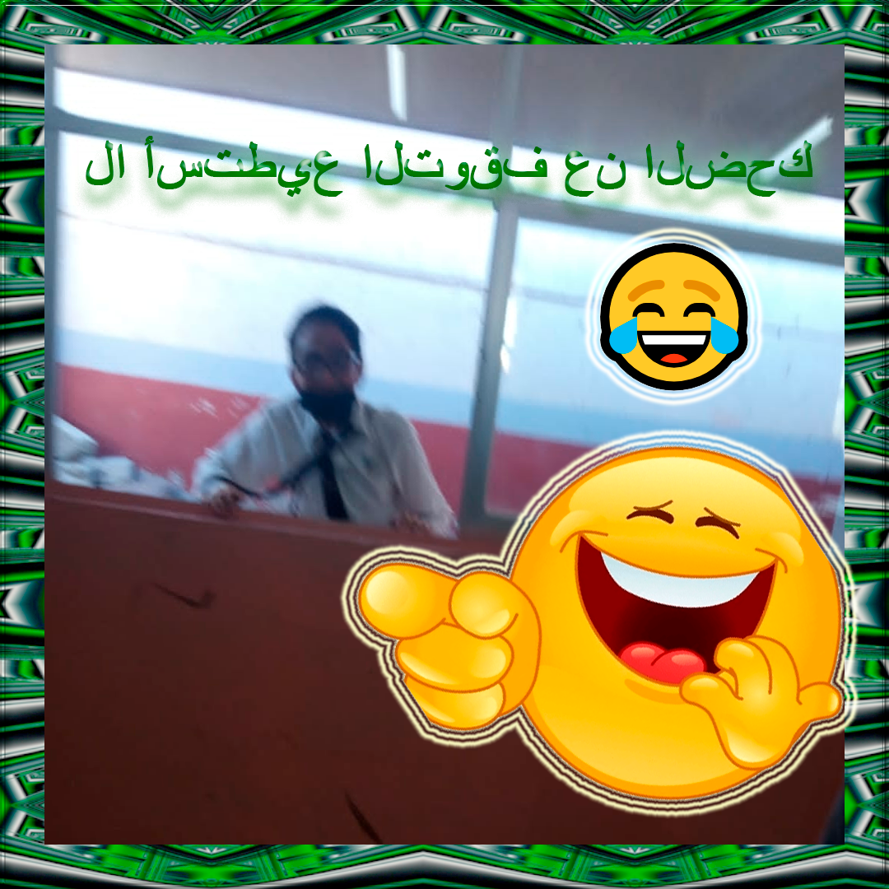

Casos de Éxito: Moisés Martínez Cruz
En la Escuela Católica Moisés, nos enorgullece compartir historias inspiradoras de nuestros alumnos. Uno de nuestros más destacados egresados es Moisés Martínez Cruz, quien ha alcanzado el sueño de convertirse en jugador profesional de Overwatch 2. Su dedicación y pasión por los videojuegos, cultivadas durante su tiempo en nuestra escuela, son un ejemplo de cómo la formación integral puede abrir puertas hacia carreras inesperadas.
Moisés comparte: “La Escuela Católica Moisés no solo me enseñó habilidades académicas, sino que también fomentó mi creatividad y mi espíritu de trabajo en equipo, fundamentales para mi carrera en los esports.”
Estamos emocionados de ver cómo nuestros exalumnos, como Moisés, siguen brillando en sus respectivos campos, llevando con ellos los valores y aprendizajes adquiridos en nuestra comunidad.